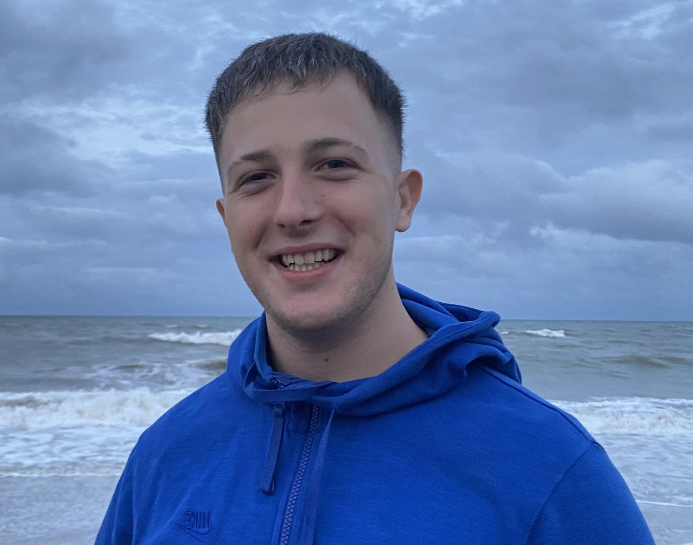

Matias Otero

Summary
I'm a student of the UTN (Universidad Tecnológica Nacional), located in Buenos Aires, Argentina and currently in the
Systems Engineering career. At the same time i'm Learning Web Development Full Stack in the UDEMY Academy.
In the work environment, i recently started a entrepreneurship of Computers Tecnic Services, Named
Hypertech. It all started as a hobbie for me, but today i'm trying to convert this tech passion on a profession.
In the next months, with all my efforth and capabilities, i aspire to grow, personality and profesionally. Be able to perfect and expand my skills and horizonts.
Education
Systems Engineering career
Academy: UTN (Buenos Aires, Argentina).
Date: 2022 - currently.
Electromechanical Technician degree
Academy: Instituto Juan Segundo Fernández (Buenos Aires, Argentina).
Date: 2014 - 2020.
Work Experience
Calification and certification of Steam Powered Machines - Tecno Process (2023)
Electrician Maintenance - The Walt Disney Company Argentina (2022 - 2023)
Proyect Administartion (2022)
Customer Services - Tools and Sanitary Store (2020-2022)
Skills
- Great afinity with diverse computer programs. Self-Taugh Person.
- Solid knowledge of Software, Hardware and Computer Architecture.
- Understanding and manipulation of electrical circuits.
- PLC programming: ⭐️⭐️⭐️⭐️
- MS Office Suite: ⭐️⭐️⭐️⭐️
Other